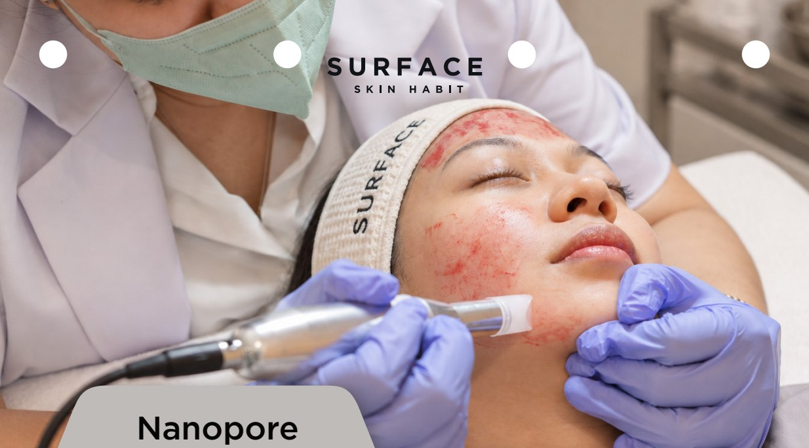

Texture Start
Pengelupasan mekanis halus lalu peeling dokter. Titik mulai untuk pori dan tekstur kasar.
- New Skin Here (diamond peel tanpa ekstraksi)
- LHALA Peel oleh dokter
Satu sesiRp 750.000
Paket 3 sesiRp 1.950.000
Paket 6 sesiRp 3.600.000
Tekstur adalah tahap setelah warna kulit rata: pori besar, kekasaran, dan bekas jerawat yang cekung. Facial tidak menjangkaunya; resurfacing, microneedling, dan subsisi oleh dokter yang bekerja.

Bawa pertanyaanmu. Dokter membantu memahami pilihan yang sesuai.
01Pori besar dan tekstur kasar
02Bopeng atau bekas jerawat cekung
03Kulit tidak rata saat terkena cahaya
Konsultasi gratis. Dokter memastikan kesesuaian dan harga sebelum treatment.
Pengelupasan mekanis halus lalu peeling dokter. Titik mulai untuk pori dan tekstur kasar.
Microneedling 3–4 sesi untuk pori dan bekas dangkal. Kemerahan 1–3 hari.
Bekas cekung yang tertambat dilepaskan dengan subsisi, lalu dibangun dengan needling dan PRP.
Paket dibayar di muka. Hasil berbeda pada setiap orang. Interval ditinjau bersama dokter.
Temui dokter dan bahas kulit, tujuan, serta riwayat perawatanmu.
Pahami pilihan treatment dan harga sebelum memutuskan.
Tinjau perkembangan bersama dokter dan tentukan langkah selanjutnya.
Ratusan tusukan mikro yang sangat halus memicu proses perbaikan alami kulit, sehingga jaringan parut terisi dan tekstur menghalus.
Lihat penjelasan kulit ↗CARA KERJANYAUjung berlapis butiran berlian mengikis lapisan sel kulit mati, lalu isapan lembut mengangkat serpihannya.
Lihat penjelasan kulit ↗Contoh nyata dari menu Surface yang diberikan untuk situs ini. Jumlah sesi dicantumkan; waktu antar foto tidak diberikan.

Contoh dari menu sebelum-sesudah yang disediakan Surface. Pencahayaan dan sudut dapat berbeda. Ini contoh individu, bukan perkiraan hasil kulitmu.
Hasil individu berbeda. Perbandingan dapat berbeda dalam cahaya, sudut, ekspresi, dan waktu; bukan studi terkontrol atau jaminan hasil. Masking privasi sumber dipertahankan.
Lihat semua contoh yang diberikan ↗Pilih keluhan. Pahami cara kerja treatment dan yang bisa diharapkan.
Pilih klinik dan waktu pilihan. Tim mengonfirmasi ketersediaan melalui WhatsApp.
Tanyakan kesesuaian, pemulihan, biaya, dan tinjauan berikutnya sebelum memutuskan.
Ikuti instruksi pascaperawatan dari klinisi dan sepakati kapan kulit ditinjau kembali.
Lebih dalam bukan berarti lebih baik. Tindakan sesuai kebutuhan, anatomi, dan kulitmu—bukan peringkat kekuatan treatment.
Lapisan pelindung luar. Tekstur permukaan dan sebagian masalah pigmen melibatkan area ini. Pigmen juga bisa lebih dalam; flek gelap bukan diagnosis.
Pembersihan lembut, peeling superfisial tertentu, dan treatment pigmen pilihan dokter bekerja dengan cara berbeda.
Jelajahi perawatan terkait ↗Lapisan penopang berisi kolagen, elastin, pembuluh, dan struktur kulit. Garis halus serta bekas luka lebih kompleks daripada kulit kasar di permukaan.
Microneedling dan RF dapat memicu respons pembaruan berbeda; keduanya tidak saling menggantikan dan kedalamannya tidak sama.
Jelajahi perawatan terkait ↗Lemak dan jaringan ikat di bawah dermis membantu membentuk serta melindungi area. Volume lebih sedikit tidak otomatis lebih baik.
Kontur perlu penilaian anatomi serta alat atau produk injeksi yang sebenarnya—bukan sekadar nama treatment.
Jelajahi perawatan terkait ↗Struktur ikat lebih dalam, termasuk SMAS wajah, berada di bawah kulit. Anatomi berbeda menurut area; ini bukan lapisan kulit universal tersendiri.
Ultrasound terfokus memakai kedalaman fokus terpilih. Dokter menentukan alat, area, serta pengaturan; ilustrasi ini tidak menentukan kedalaman tindakan.
Jelajahi perawatan terkait ↗Otot ekspresi berada di bawah dan berinteraksi dengan kulit serta jaringan ikat. Otot berbeda dari dermis.
Botulinum toxin mengurangi aktivitas otot tertentu untuk melembutkan garis ekspresi. Ini tidak mengeksfoliasi atau mengencangkan lapisan kulit.
Jelajahi perawatan terkait ↗Tiga bidang pertama menggambarkan epidermis, dermis, serta jaringan subkutan. Dua terakhir adalah struktur terkait di bawahnya. Cahaya, panas, dan jarum tidak bekerja dalam kotak yang terpisah sempurna.
Referensi anatomi kulit ↗Microneedling biasanya 3–4 sesi, tiap 4 minggu. Bekas cekung yang dalam butuh subsisi dulu. Dokter menyusun urutannya setelah melihat bekasnya.
Diamond Resurface: tidak ada. Microneedling: kemerahan 1–3 hari. Subsisi: memar ringan beberapa hari.

Dokter Penanggung Jawab · Dokter Estetika
Setiabudi

Dokter Penanggung Jawab · Dokter Estetika
Setiabudi · TSM Cibubur

Ceritakan kebutuhan kulitmu. Mulai dengan konsultasi dokter gratis di klinik Surface terdekat.
● WhatsApp dibalas setiap hari, 09.00–22.00 WIB